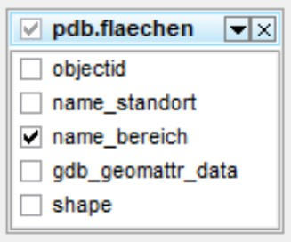
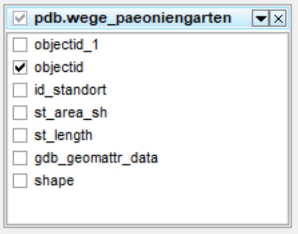
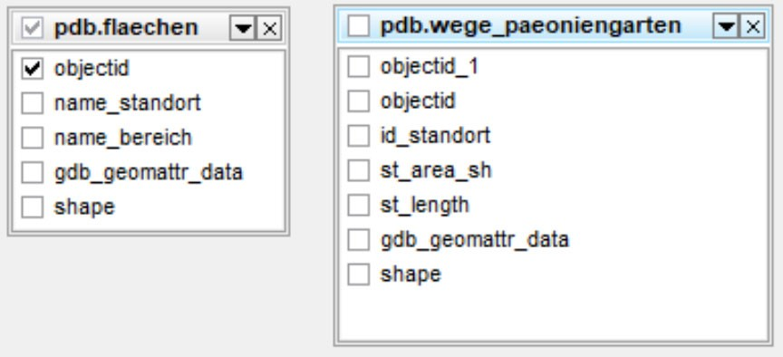
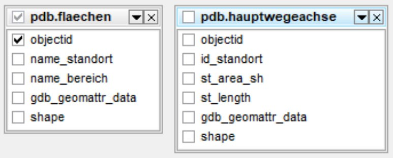
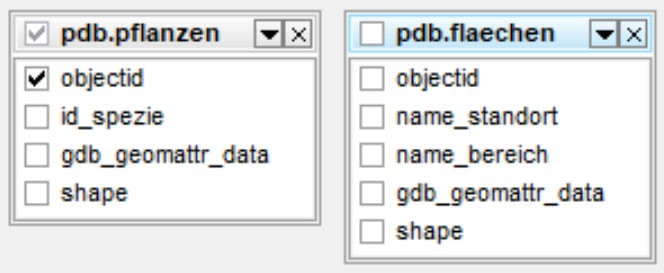

Geoverarbeitung in der Datenbank mit ArcGIS Pro und SQL
In diesem Kapitel sollen konkrete Geoverarbeitungsoperationen in ArcGIS Pro und PostGIS/SQL gegenübergestellt werden. Dafür bearbeiten wir die entsprechende Fragestellung zunächst in ArcGIS Pro und stellen anschliessend die gleiche Funktion in PostGIS nach. Zur Visualisierung des Ergebnisses der SQL-Abfrage nutzen wir das Werkzeug “Make Query Layer” in ArcGIS Pro aus Übung 4.
Übung 7: Geometrien zusammenführen mit “Dissolve”
Die importierten Flächen sind alle einem bestimmten Bereich zugeordnet. Um einen Überblick über die Grösse und Ausdehnung der Bereiche zu bekommen, möchten wir alle Flächen (Tabelle pdb.flaechen_shp) mit identischem Bereich (Attribut “name_bereich”) zusammenführen (Abbildung 54.1).
- Führen Sie die Geometrien mit identischem Bereichsnamen (Attribut “name_bereich”) zusammen. Verwenden Sie wieder die Verbindung mit dem Benutzer studentNr.
- Verwenden Sie das Werkzeug “Dissolve” in ArcGIS Pro. Nutzen Sie dabei Multipart Features. Speichern Sie das Ergebnis als neuen Layer.
- Formulieren Sie jetzt die SQL Anfrage in pgAdmin (Verbindung wieder mit Benutzer studentNr). Verwenden Sie dabei die Funktion ST_UNION. Um nur gewünschte Flächen zu erhalten, sollten Sie das Ergebnis im SQL-Befehl nach dem Namen des Bereichs gruppieren (GROUP BY).
- Optional: Was passiert wenn das GROUP BY weggelassen würde? Probieren Sie es aus.
- Lassen Sie das Attribute name_bereich für die Flächen anzeigen.
- Zeigen Sie das Ergebnis mit “Make Query Layer” an und vergleichen mit dem ArcGIS Pro Resultat.
Da Ihr Datenbankbenutzer studentNr keine Berechtigungen zum Speichern in der Server Datenbank hat, können Sie das Ergebnis lokal auf Ihrem Rechner in Ihrem Ordner oder einer eigenen Geodatenbank ablegen.

Übung 8: Puffer um Geometrie erstellen
Auf dem Campus sollen die Wege im Päoniengarten auf jeder Seite um 25cm verbreitert werden. Um die neuen Wege darzustellen, erstellen wir einen Puffer. Die Wegflächen finden Sie in der Datenbank in der Feature Class “wege_paeoniengarten” (siehe Abbildung 54.2).
- Legen Sie jeweils einen Puffer von beidseitig 25cm um das Wegenetz.
- Nutzen Sie dazu einmal das Werkzeug “Buffer” in ArcGIS Pro. Speichern Sie hierbei das Ergebnis.
- Nutzen Sie jetzt die POSTGIS Funktion ST_BUFFER in pgAdmin. Geben Sie auch die id der Flächen mit aus.
Achten Sie auf die Einheiten. Welche Einheit nimmt ST_BUFFER? Fragen Sie die Online-Hilfe.
- Skizzieren Sie ihr Vorgehen in ArcGIS Pro und notieren ihren SQL-Befehl.
- Um das Ergebnis der PostGIS Funktion zu visualisieren, nutzen Sie das Werkzeug “Make Query Layer” mit Ihrer SQL Abfrage.
- Vergleichen Sie die Ergebnisse. Schauen Sie sich auch die Attribute an. Was fällt auf?

Übung 9: Geometrien überschneiden mit “Intersect”
An einigen Stellen muss für die Verbreiterung des Weges die Fläche einiger Beete weichen. Ermitteln Sie die betroffenen Beete, welche Fläche für die neuen Wege abgeben müssen (siehe Abbildung 54.3).
- Bilden Sie die Schnittmenge (Intersection) der gepufferten Wegfläche und der restlichen Flächen aus der Tabelle “pdb.flaechen”.
- In ArcGIS Pro verwenden Sie dazu das Werkzeug “Pairwise Intersect”. Sie können als Input entweder Ihr Ergebnis aus der vorigen Übung benutzen oder Sie verwenden den Datensatz “wege_paeoniengarten_buffer” aus der Datenbank. Speichern Sie das Ergebnis.
- Stellen Sie den SQL-Befehl mit Hilfe der Funktion “ST_INTERSECTION” für diese Abfrage in pgAdmin auf und visualisieren das Ergebnis wieder mit “Make Query Layer”. Sie können als Input entweder den gespeicherten Puffer aus der vorigen Übung verwenden oder Sie verwenden den Datensatz “wege_paeoniengarten_buffer” aus der Datenbank. Probieren Sie ebenfalls einmal aus durch eine verschachtelte Abfrage den Puffer mit ST_BUFFER direkt einzubeziehen. Geben Sie in Ihrem SQL-Befehl auch die ID der Fläche mit aus.
- Skizzieren Sie ihr Vorgehen in ArcGIS Pro und notieren ihren SQL-Befehl.
- Vergleichen Sie die Ergebnisse aus ArcGIS Pro und SQL.
Die SQL Funktion ST_INTERSECTION erzeugt immer eine so genannte Geometry Collection, auch wenn zwei Geometrien keine Schnittmenge aufweisen, gibt es einen dann leeren Eintrag. Aus diesem Grund zeigt das Ergebnis immer alle Geometrien an. Haben die Geometrien keine Schnittmenge, so ist die Geometrie leer. Um leere Geometrien auszuschliessen, sollte im WHERE-Abschnitt z.B. mit der Funktion ST_OVERLAPS oder der Funktion ST_INTERSECTS geprüft werden, ob die zwei Eingabe-Geometrien (Gepufferte Wege und sonstige Flächen) überhaupt irgendwo überlappen. Im ArcGIS Pro werden leere Geometrien automatisch vom Ergebnis abgeschnitten.

Übung 10: Flächen berechnen in ArcGIS Pro und SQL
In der Übung 10 wurden Flächen ausgeschieden, welche von den betroffenen Beeten abgegeben werden müssen. Die genauen Flächengrössen sollen jetzt berechnet werden (Abbildung 54.4).
- Welche Beete müssen wie viel Fläche abgeben? Berechnen Sie die Fläche pro Beet in qm.
- Legen Sie dazu in ArcGIS Pro ein neues Feld in der Attributtabelle ihres gespeicherten Layers an und berechnen dort die jeweiligen Einzelflächen in qm (Calculate Geometry). Haben Sie das Ergebnis in einer Geodatenbank gespeichert gibt es bereits das Attribut shape_area mit der Fläche in qm.
- Erstellen Sie in pgAdmin eine Abfrage in SQL, welche ebenfalls die jeweiligen Einzelflächen in qm ausgibt. Ergänzen Sie dazu die SQL-Abfrage aus Übung 9 mit einem neuen Feld, welches die Fläche ausgibt. Wenden Sie dazu die Funktion ST_AREA auf das Geometriefeld an.
- Visualisieren Sie das Ergebnis erneut mit “Make Query Layer”.

Übung 11: Geometrien ausschneiden mit “Erase”
Als nächstes wollen wir die grosse Hauptwege-Achse zu unseren Flächen hinzufügen. Hierzu haben wir eine weitere Feature Class in der Datenbank mit der Hauptwegeachse zur Verfügung. Leider enthält die Feature Class nur die Aussengrenzen des Weges. Da es auf dem Weg auch Beete gibt, wollen wir diese Beetflächen aus der Wegfläche ausschneiden (siehe Abbildung 54.5).
- Schneiden Sie die Beetflächen aus der Wegeachse aus. Nutzen Sie dafür:
- In ArcGIS Pro das Werkzeug “Erase” und speichern das Ergebnis als neue Feature Class oder als Shapefile in Ihrem Ordner.
- Formulieren Sie in pgAdmin den SQL-Befehl mit der Funktion ST_DIFFERENCE und zeigen Sie das Resultat mit “Make Query Layer” auf der Karte. Geben Sie dabei zusätzlich die id der Fläche sowie die Attribute name_standort und name_bereich mit aus.
- Vergleichen Sie die Ergebnisse.
Diese Anfrage funktioniert in zwei Schritten mit einer verschachtelten Abfrage (aber trotzdem in einem SQL-Befehl). Um Polygone auszuschneiden, müssen wir zunächst alle Wegeflächen und alle sonstigen Flächen aus der Tabelle “flaechen_shp” zu jeweils einem Polygon zusammenfügen (ST_Union), damit wir nur noch zwei Flächen miteinander vergleichen müssen. Anschliessend werden die beiden Flächen dann mit dem Werkzeug ST_Difference untersucht.
Die Funktion ST_Difference berechnet für jedes eingeschlossene Polygon einmal die Differenzmenge aus der Wegefläche und allen eingeschlossenen Polygonen. Dadurch hat das Ergebnis eigentlich zu viele Einträge, für jedes eingeschlossene Polygon ein Eintrag, welche aber alle dieselbe Geometrie aufweisen. Der Parameter LIMIT 1 limitiert die Ausgabe auf ein Feature.

Übung 12: Geometrien ausschneiden mit “Clip”
Als nächstes möchten wir alle Pflanzen suchen, welche auf bereits kartierten Flächen stehen. Hierzu nehmen wir den Punktdatensatz der Pflanzen und verschneiden diesen mit den bereits vorhandenen Beet-Flächen (siehe Abbildung 54.6).
- Suchen Sie alle Standorte (Punkte) der Pflanzen, welche auf kartierten Flächen stehen.
- In ArcGIS Pro verwenden Sie das Werkzeug “Clip” und schneiden damit überflüssige Punkte weg. Speichern Sie das Resultat in Ihrem Ordner. Alternativ würde auch ein “Select by Location” gehen.
- Formulieren Sie auch hierzu die SQL-Anfrage in pgAdmin, welche alle Punkte auf den Flächen zurückgibt. Sie können dazu wieder die Funktion ST_INTERSECTION nutzen. Achten Sie darauf, dass wir dabei wieder nur diejenigen Punkte haben wollen, welche auch wirklich in Beziehung zu den Flächen stehen. Diesen Filter müssen Sie im WHERE-Abschnitt bereitstellen. Verwenden Sie dafür diesmal die Funktion ST_INTERSECTS. Binden Sie ausserdem noch die Attribute id_pflanze (objectid) und id_spezies in die Ausgabe ein und sortieren die Liste danach anhand der id_pflanze.
